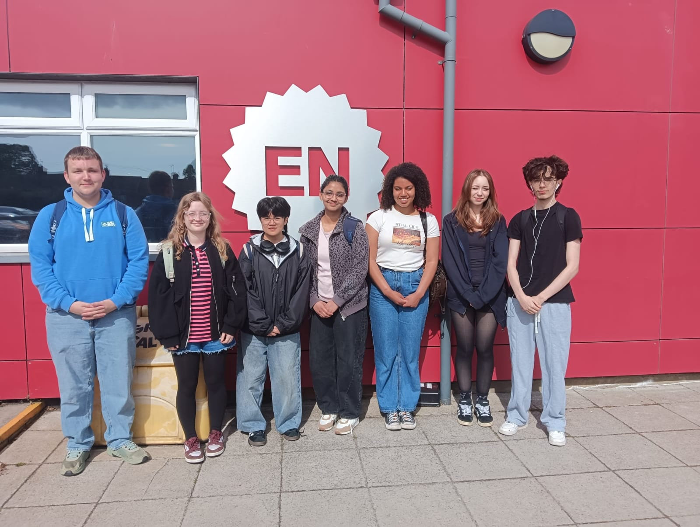

We capture curtailed energy from wind turbines and convert it into green hydrogen — storing clean power and giving it back to the grid when it's needed most. Zero carbon. Zero waste.
EcoVolt is an engineering proposal for a fully integrated green hydrogen production facility in the Great Yarmouth region. We take curtailed wind energy — electricity the grid can't absorb but still has to pay for — and convert it into green hydrogen using a 5 MW PEM electrolyser. That hydrogen can then be stored and released back as electricity, or distributed as zero-emission fuel.
Make the UK's supply of hydrogen green — less grey hydrogen produced, fewer carbon emissions, leading the UK one step closer to net zero.
Great Yarmouth region, Norfolk — close to offshore wind farms, the port, existing logistics infrastructure, and national grid connections.
A 5 MW PEM (Proton Exchange Membrane) electrolyser — high tech infrastructure that uses clean electricity to split water into green hydrogen and pure oxygen. It turns on and off in seconds, perfect for capturing unexpected bursts of curtailed wind energy.
Kevin Harrison (Wind2H2), CeraPhi Energy, Suzanne Allen (EEEGR) — industry professionals who shaped our technical, permitting, and project management approach.
Wind energy is intermittent. When turbines generate more power than the grid can handle, operators are paid to switch them off. That wasted energy costs the UK billions — and the number keeps growing as more offshore wind comes online.
In 2025, the UK government spent £1.5 billion paying wind farms to curtail — shutting off perfectly good clean electricity because the grid couldn't absorb it.
As the UK builds more offshore wind, this figure is forecast to rise to £8 billion a year by 2030 — unless long-duration storage solutions are deployed at scale.
Currently, most hydrogen is made using fossil fuels — releasing large amounts of CO₂, contributing to climate change and slowing the UK's net zero targets.
When turbines generate too much electricity on windy days the grid cannot handle it. The government actually pays companies £1.5 billion a year to turn that clean energy off.
Hydrogen can be stored safely and turned back into electricity quickly using our peaking plant design — making it ideal as a long-duration energy store.
Development of vehicles running on hydrogen is increasing globally. The global market is expected to grow to $41.4 billion by 2034.*
* market.us/report/hydrogen-vehicle-market/
Our project produces green hydrogen which helps achieve net zero targets — replacing grey hydrogen produced from fossil fuels with a clean, renewable alternative.
By capturing excess curtailed energy and releasing it back when demand is high, we act as a flexible buffer — helping stabilise the regional power grid.
Take the curtailed energy straight from the wind turbines to power a hydrogen plant which produces green hydrogen. EcoVolt aims to make the UK's supply of hydrogen green — less grey hydrogen needs to be produced, resulting in fewer carbon emissions and leading the UK one step closer to net zero.
A fully circular system — from seawater to green hydrogen. Every input is used and every by-product becomes a resource.
Curtailed energy from wind farms is captured and used to power the electrolyser — stopping clean electricity from going to waste and balancing the regional grid.
Sea water is desalinated then deionised to create ultra-pure water required for electrolysis. Heavy salt concentrations captured from desalination are repurposed for industrial manufacturing and regional road de-icing.
The 5 MW PEM electrolyser splits the ultra-pure water into "green" hydrogen and medical-grade oxygen. It turns on and off in seconds — perfect for capturing fast, unexpected curtailed wind energy before it goes to waste.
The newly made hydrogen is safely stored within high pressure tanks on site, ready to be dispatched on demand — either back to the grid or out to vehicles as fuel.
High-pressure hydrogen is released through a turbine, generating electricity during low-wind periods. This turns EcoVolt into a peaking power station — providing grid stability when renewables drop.
Hydrogen is distributed from our on-site fuelling station to vehicles ranging from lorries and buses to boats — a zero-emission fuel that combusts to produce only water vapour, not CO₂.
EcoVolt goes beyond a standard hydrogen plant. We've integrated smart technology to make the facility safer, more responsive, and more reliable.
Automatically triggers hydrogen production during peak "waste" wind periods using live weather data — ensuring we never miss a curtailment opportunity.
Advanced, high-precision sensors detect tiny vibrations and pressure changes throughout the facility — catching issues before they become problems.
Smart AI systems catch and fix mechanical issues or leaks before they even happen — reducing downtime and keeping the plant running smoothly and safely.
Insulated enclosures, predictive maintenance, and smart monitoring systems ensure high safety standards for the Great Yarmouth community.
A project of this scale requires engagement with a wide range of groups — from the community who will benefit, to regulators, investors, and technology suppliers.
We'll engage through interactive public events and Q&A panels, sharing clear explanations of how EcoVolt will impact them — taxes, water, local job creation, and environmental improvements.
Regular updates via email and social media covering logistics, the hydrogen fuelling station, and economic and environmental benefits of zero-emission fuel for fleets.
Direct workshops and meetings with council members, sharing digital leaflets detailing planning permissions and economic benefit to the local economy — including job creation.
Site tours after construction and educational workshops — sharing information about the energy sector and available apprenticeships with the next generation.
Private and institutional investors providing capital for construction, equipment procurement, and commissioning. We offer strong ESG credentials and a clear path to revenue from multiple by-product streams.
The electricity network and renewable generators whose surplus curtailed power feeds our electrolyser — and receive stored energy back on demand, improving grid stability for the region.
PEM electrolyser manufacturers, water treatment vendors, and compression system suppliers — contracted on SLAs covering installation, commissioning, and long-term maintenance.
James Paget University Hospital and local fisheries are potential offtake customers for the medical-grade oxygen produced during electrolysis — creating an additional revenue stream.
We've identified and mitigated every significant hazard — from hydrogen leaks to system overheating. Each risk is scored (Likelihood × Severity) and managed through smart technology and proven safety systems.
| Hazard | Likelihood | Severity | Score | Mitigation |
|---|---|---|---|---|
| Hydrogen leak | 2 | 5 | 10 | AI leak detector, automatic shutoff valves, pipe inspection |
| Oxygen buildup | 1 | 3 | 3 | Ventilation, separate oxygen storage, smart AI monitoring |
| Tank pressure failure | 1 | 5 | 5 | Pressure relief valves, reinforced tanks, regular inspection |
| System overheating | 4 | 2 | 8 | Temperature sensors, cooling systems, automatic shutdown |
| Shock from electrolyser | 2 | 5 | 10 | Insulated enclosures, grounding systems, emergency isolation |
| Water contamination | 3 | 3 | 9 | Regular water quality testing, sealed pipework, AI monitoring |
| Explosion | 1 | 5 | 5 | Explosion proof equipment, smart AI monitoring, emergency vents |
| Transportation errors | 2 | 2 | 4 | Staff training, secure containers, clear operating procedures |
Full capital expenditure breakdown covering land, civil works, core plant, professional fees, and contingency. All figures in GBP.
| Land & Site Preparation | |
| Land acquisition | £2.80m |
| Levelling & groundworks | £0.70m |
| Regulatory & Safety | |
| Permits & licences | £0.30m |
| Safety systems | £0.18m |
| Civil & Site Infrastructure | |
| Site infrastructure | £0.65m |
| Electrical systems | £2.00m |
| Core Plant Equipment | |
| Water treatment & desalination | £0.40m |
| 5 MW PEM electrolyser (55 kWh/kg efficiency) | £5.50m |
| Cooling systems | £0.80m |
| High pressure hydrogen storage | £2.00m |
| Compression systems | £1.20m |
| On-site fuelling station | £0.80m |
| Professional Fees | |
| Labour (30%) | £5.20m |
| Design & engineering | £1.39m |
| Project management | £1.04m |
| Commissioning | £0.52m |
| Risk | |
| Contingency (20%) | £3.47m |
| Total Capital Cost | £28.95m |
EcoVolt is designed to waste nothing. Every by-product and output stream is a potential revenue source — creating a circular economy that funds its own long-term growth.
Salt from seawater desalination is dried using waste heat from the PEM stack — turning a process cost into a direct revenue stream. Sold for industrial manufacturing and regional road de-icing.
Oxygen produced during electrolysis is captured and, if certified to MHRA medical grade, supplied to local NHS facilities including James Paget University Hospital in Gorleston.
Water desalinated but not fully deionised can be sold to regional water companies as pre-treated clean water rather than discharged as waste — targeting near-zero liquid waste.
As hydrogen vehicle adoption grows, the fuelling point can expand into a full-scale refuelling station serving passenger vehicles, HGVs, buses, and local fleet operators.
EcoVolt is a seven-person team from East Norfolk Sixth Form, working under the EEEGR programme to design a green hydrogen plant for the Great Yarmouth region.
